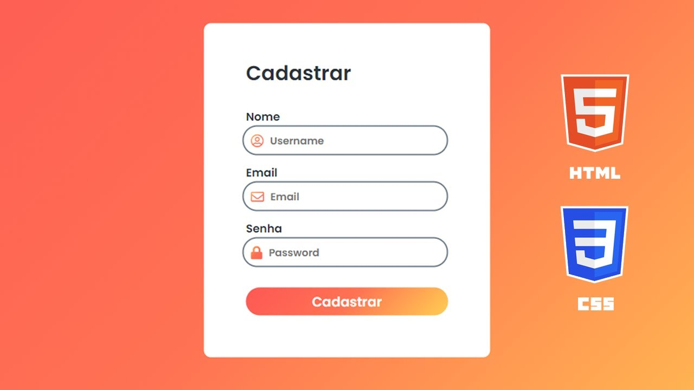
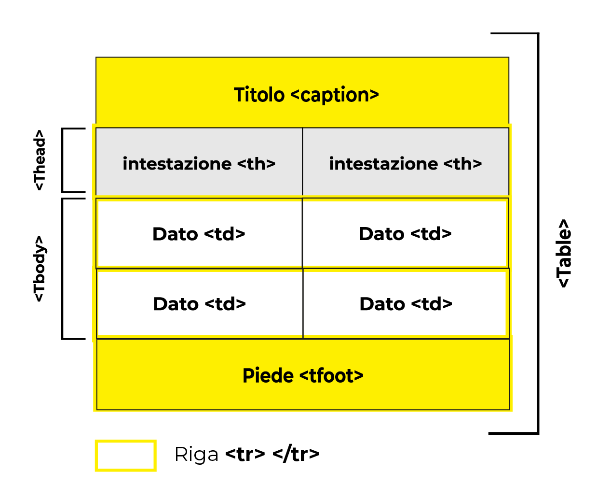
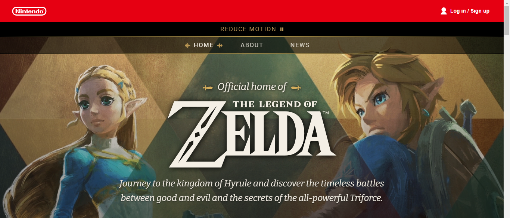
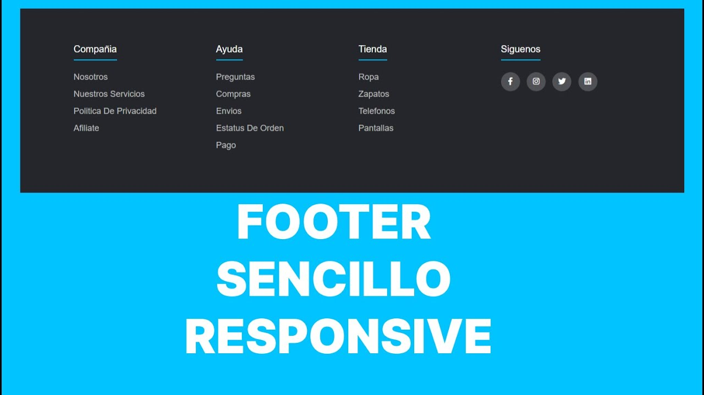
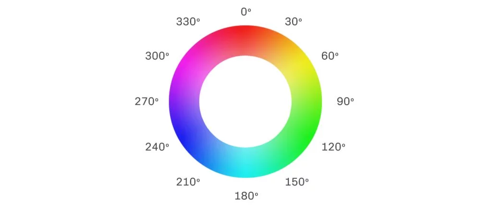

Bitacora unidad 3
Formularios HTML
Ideas de este tema.
Notas
Los formularios HTML son secciones interactivas que permiten ingresar datos, de cualquier cosa, como encuestas, o poner información personal, se definen con la etiqueta 'form' y contienen elementos como ''input'' para campos de texto, al igual con contraseñas , el 'textarea' para áreas de texto extensas y ''select' con ''option''' para listas desplegables, ''label'' para etiquetar los campos y ''button'' type="submit"> para enviar la información, se usa PHP para poder enviar la información que se puso en la en cualquiera de los campos que pusimos en la pagina, también se puede usar CSS para que se miren más chidos.

Resumen del tema
Los formularios en algunas páginas son de suma importancia, tanto para que las personas ingresen a un sitio, de manera segura, o para hacer encuestas, hasta para el poder comprar artículos, porque también funciona para esto, ya que con los formularios se crean estos cuadros los cuales piden datos o contraseñas personales, por eso es importante realizarlos de manera segura y hasta con un buen estilo.
TABLAS
Ideas
Notas
Las tablas en HTML se construyen con la etiqueta ‘table’, organizadas en filas (‘tr’) y celdas (‘td’
o ‘th’). Los encabezados (‘th’) mejoran la estructura y la accesibilidad, y se pueden agrupar filas
con ‘thead’, ‘tbody’ y ‘tfoot’.
Con CSS, se pueden aplicar bordes, controlar el espaciado entre celdas, alinear el contenido y poner
las filas o columnas específicas, es importante usar tablas solo para datos tabulares, no para
maquetar, y asegurarse de que sean accesibles y que sean llamativas depende de las páginas que se
esté haciendo.

Resumen
Las tablas son una herramienta fundamental para organizar información en filas y columnas, de forma similar a una hoja de cálculo, pero mas bonitas y mas creativas, dependiendo de la pagina que se este creando, se utilizan principalmente para presentar datos tabulares de manera estructurada y fácil de leer, con CSS se pueden ordenar mejor, y poner colores llamativos.
ESPECIFICIDAD
Ideas
Notas
La especificidad en CSS es un conjunto de reglas que determinan qué estilos se aplican a un elemento
HTML cuando hay varias reglas que podrían aplicarse, es casi como un sistema de pesos que el
navegador
utiliza para decidir qué estilo "gana" en caso de conflicto por asi decirlo, o tambien podemos
utilizarlo a nuestro favor, en caso de que querramos hacer algun cambio rapido.
Utilizar adecuadamente el 'important' ya que este anula por completo lo que este haciendo cualquier
elemento sin importar que sea mayor o menor.

Resumen
La especificidad en CSS es un sistema de reglas que determina qué estilos se aplican a un elemento HTML cuando hay varias reglas en conflicto, basicamente el navegador calcula un "peso" para cada selector, priorizando los estilos en línea, seguidos de id, clases y finalmente elementos, !important fuerza la aplicación de un estilo, asi que puede ser muy efectivo, comprender este tema de la especificidad, me ayuda saber que es una herramienta para poder escribir en CSS más especifico y evitar conflictos entre elementos, si es que los hay claro.
HEADER
Ideas
Notas
El header es lo más importante de una página porque esto es lo primerito que miramos al entrar a una
página, así que este debe ser muy bonito y muy cómodo para que la persona pueda navegar de una
manera ya sea divertida, o depende de la página que se elabore, principalmente con el CSS se puede
hacer muy llamativa y poner cosas que a primera vista pues llamen mucho la atención acorde al tema
que se esté dando, con las animaciones siento yo que se puede dar un toque muy único y visualmente
muy lindo.
También cuidar mucho que este sea el mismo en las demás paginas si es que hay más de una página, y
también poner siempre el logo de la empresa o de lo que sea el sitio web.

Resumen
El header es un componente esencial en el diseño de una pagina web, este proporciona una estructura semántica, mejora la accesibilidad, facilita la navegación y permite crear una experiencia de usuario más atractiva. ya que al diseñar un header es la primera impresión que se lleva el usuario del sitio, por lo que debe ser visualmente atractivo, funcional y reflejar la identidad del sitio web y sobre todo que este muy bien estructurado.
FOOTER
Ideas
Notas
Es importante aplicar el footer la información adecuada de la página que estemos realizando, no solo
poner las redes sociales, sino que también poner avisos legales, cookies, ubicaciones del lugar de
la empresa o local de lo que sea, también ayuda a la credibilidad de las páginas, ya que una página
que sea por así decirlo comprobada legalmente es segura de navegar en ella.
Aquí es donde deben de ir las redes sociales, ya que en el header puden verse feas, también colocar
el tema del coopyright, o sea los creditos de los diseñadores tipo fotos, etc y sobre todo los
sellos de confianza que también son importantes.

Resumen
En resumen, el footer es una parte importante de una página web. No solo es un lugar para las redes sociales, sino también para brindar información esencial, generar confianza y mejorar la experiencia del usuario e incluso se puede hacer de una manera creativa para que sea mucho mas llamativo el sitio web.
Colores
Ideas
Notas
Existe un círculo de 360 grados que este guía por así decirlo los diferentes tipos de colores que
existen, están formados de la siguiente manera, HSL (Hue 0-359, Saturation 0%-100% Lightness
0%-100%), esto significa que el primero seria 0 es rojo y mientras mas vueltas de al círculo pues va
cambiando los tonos, ya sea claro u oscuro, este aumenta o disminuye, es importante saber usar los
colores adecuados para las páginas y que cuando entren no tengan ningun disgusto por los colores tan
llamativos que se usaron.

Resumen
En resumen, la paleta de colores es una herramienta poderosa en el diseño web. Elegir la paleta adecuada puede marcar la diferencia en la experiencia del usuario, la percepción de la marca y el éxito del sitio web, por eso se deben seleccionar los colores correctos para el sitio, por ejemplo, no pondría una página de un dentista de color rojo o rosa por así decirlo.